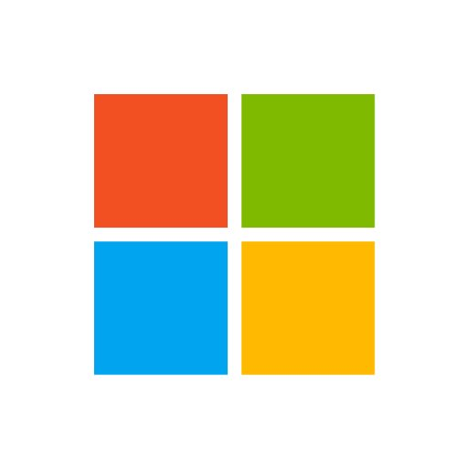

Ма́йкрософт (Microsoft Corporation, Microsoft) — одна из крупнейших транснациональных компаний по производству проприетарного программного обеспечения для различного рода вычислительной техники — персональных компьютеров, игровых приставок, КПК, мобильных телефонов и прочего. Разработчик наиболее широко распространённой на данный момент в мире программной платформы — семейства операционных систем Windows.
Подразделения компании производят семейство игровых консолей Xbox, а также аксессуары для персональных компьютеров (клавиатуры, мыши и т. д.). C 2012 года производит собственный планшетный компьютер — Surface. Продукция Microsoft продаётся более чем в 80 странах мира, программы переведены более чем на 45 языков.
Штаб-квартира компании находится в городе Редмонд, штат Вашингтон, США.
Штат сотрудников корпорации на 5 июня 2014 года составляет 127 104 человека. В 2018 году заняла второе место в списке 500 лучших работодателей мира по мнению журнала Forbes.
На территории России с ноября 1992 года действует представительство Microsoft (с июля 2004 года — ООО «Майкрософт Рус»).
Microsoft находится под надзором суда США в результате мирового соглашения 2002 года.
Продукция

Программное обеспечение производства Microsoft
Корпорация Microsoft является производителем широкого спектра программного и аппаратного обеспечения, известность во всём мире ей принесли в первую очередь операционные системы семейства Windows, а также программы для работы с документами семейства Microsoft Office. Сегодня корпорация производит множество продуктов: комплекты серверных программ, игры, средства разработки программ, а также игровые консоли Xbox.
Microsoft регулярно производит поглощение других разработчиков ПО. В частности, в результате приобретения компаний Navision, Solomonruen, Great Plainsruen в ассортименте Microsoft появилось новое крупное направление Microsoft Dynamics (ранее называлось Microsoft Business Solutions). В России представлены три решения этого направления: ERP-системы Axapta, Navision и система управления отношениями — Microsoft Dynamics CRM.
Microsoft анонсировали музыкальный сервис Groove. Он заменит существующий сервис Xbox Music и будет обладать схожими возможностями: скачивание песен и альбомов из Windows Store, потоковое вещание треков, в том числе загруженных в OneDrive и радио с автоподбором композиций на основе выбранных треков, альбомов или исполнителей.
В апреле 2021 года стало известно, что Microsoft получила от Министерства обороны США контракт на поставку носимых устройств дополненной реальности для армии. Сумма контракта составляет $21,9 млрд. В течение десяти лет Microsoft должна поставить американской армии 120 тыс. устройств, созданных на базе ее очков дополненной реальности HoloLens.